Saguenay Fjord
Québec, Canada
September 2024
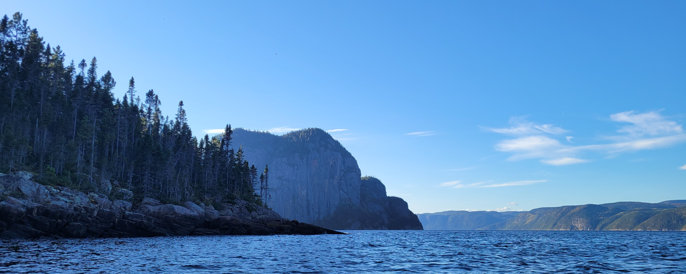
"Some landscapes are beautiful. Others make you question whether you've accidentally paddled into another world."


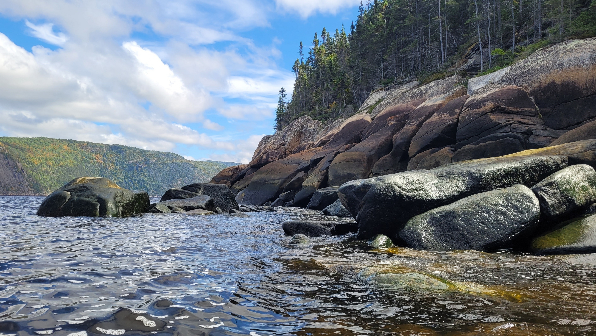
"Every bend in the fjord revealed another reason to keep paddling."
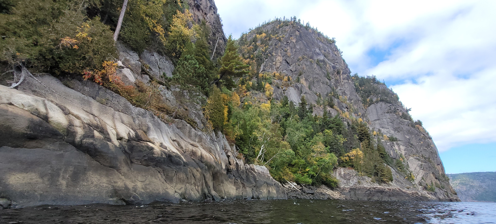
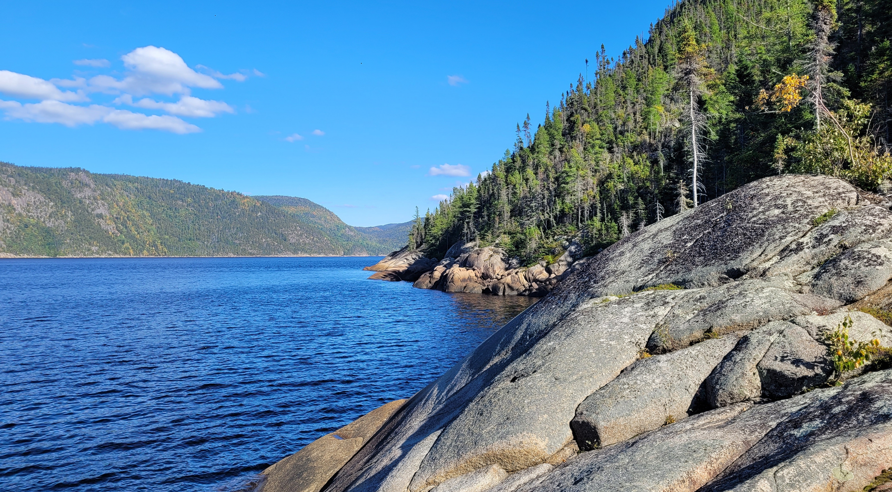
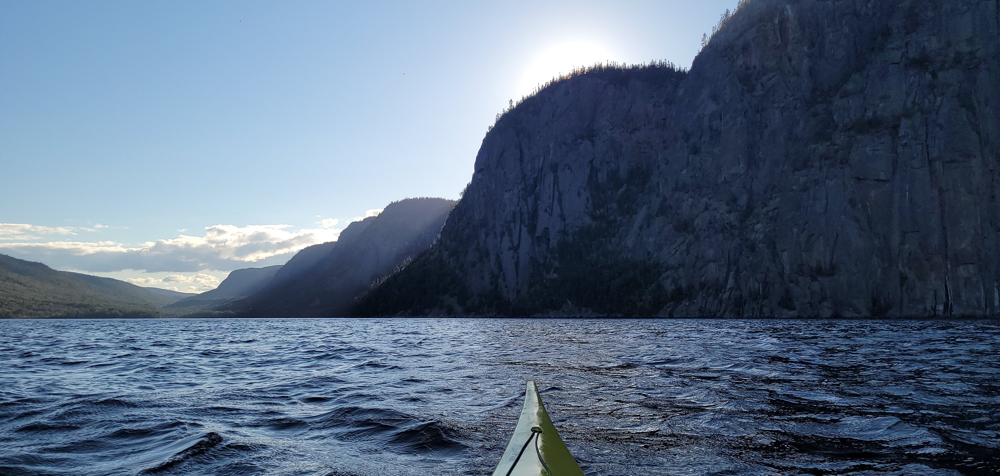
"The cliffs rose so high above the water that distance became difficult to judge."
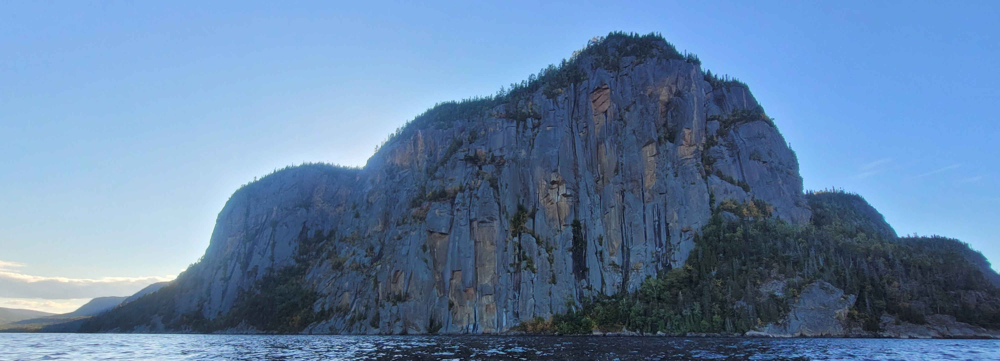
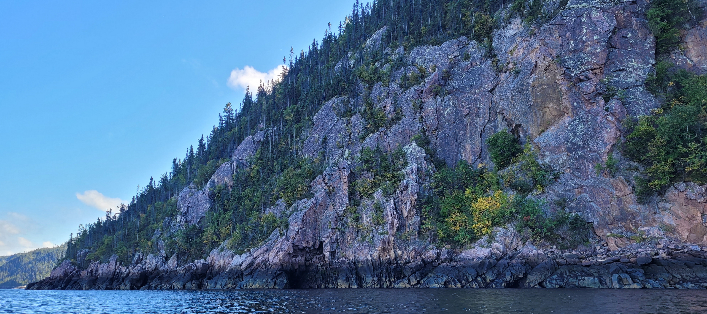
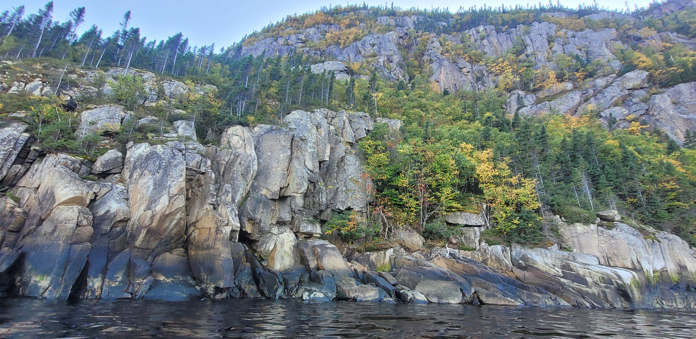
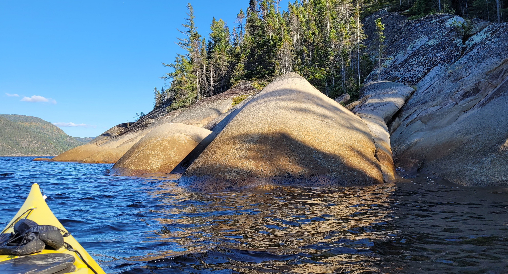
"I came prepared for cold water. I wasn't prepared for scenery like this."
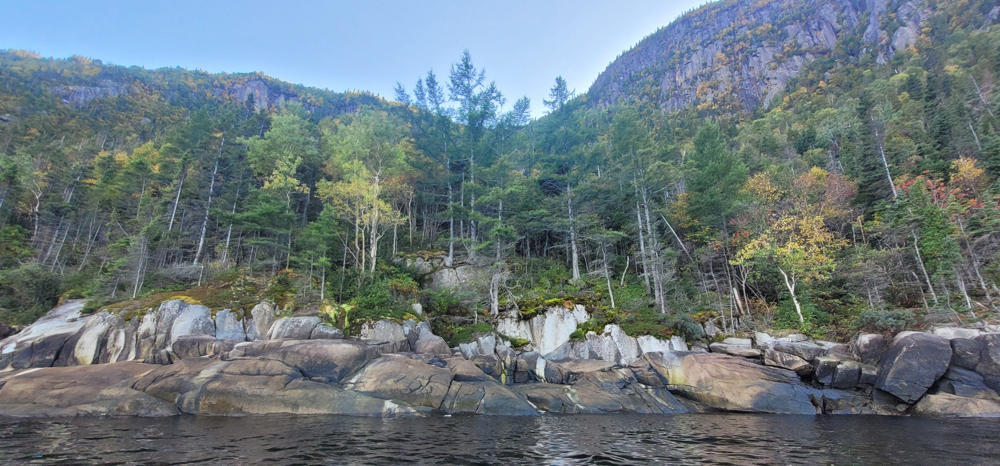


"Water below. Mountains above. Silence everywhere in between."
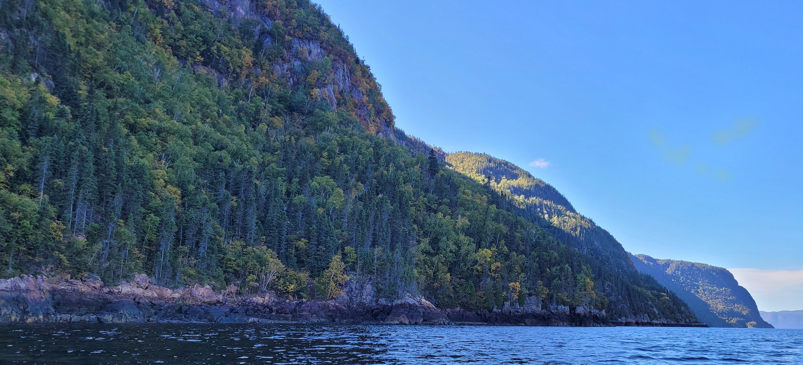
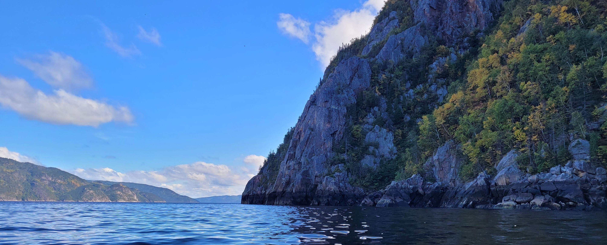
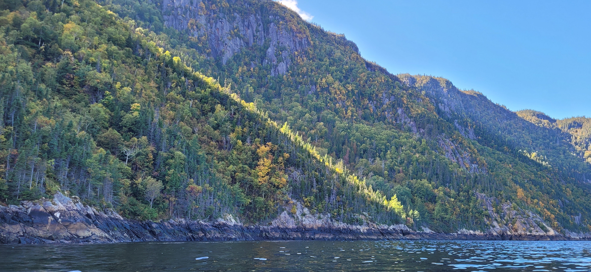
"The farther I paddled, the smaller I felt—and strangely."


"I knew before I reached shore that this would not be my last journey into the Saguenay."